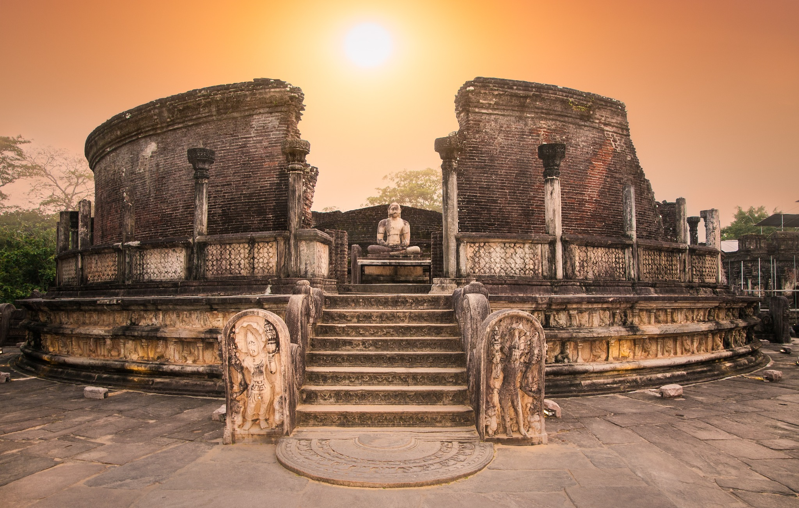
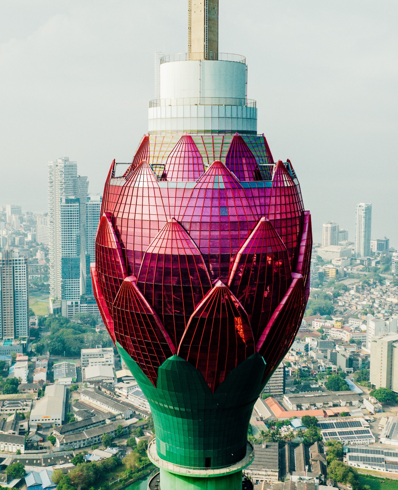

CULTURAL HERITAGE
Sigiriya Rock Fortress
Ancient architecture and breathtaking views from Sri Lanka’s Cultural Triangle.
Explore experience ↗Explore the real wonders of Sri Lanka: Sigiriya’s ancient fortress, Ella’s green hills, Mirissa’s coast and Yala’s wildlife.
From Sigiriya and Dambulla to Ella, Mirissa and Sinharaja, discover extraordinary places across Sri Lanka through our educational travel guides and sample journeys.
Get to know us ↗

We believe a great journey isn't measured by miles, but by moments.
Find your experience A NEW PERSPECTIVE, EVERY DAY ↗
A NEW PERSPECTIVE, EVERY DAY ↗Discover real Sri Lankan places, from Sigiriya Rock Fortress and the Nine Arches Bridge to Sinharaja rainforest and Yala National Park. Our sample itineraries help you explore what makes each region special.
Experiences shaped around Sri Lanka's landscape and heritage.
Explore ideas for short escapes or extended adventures.
Respect for local communities and our natural environment.



Share the places that inspire you. We'll help you explore some ideas.
Plan your escape